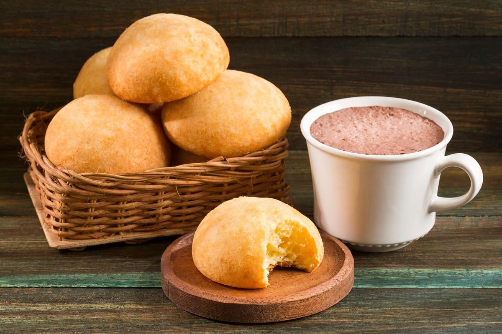

Almojábana is a traditional Colombian and Puerto Rican bread (although it is also popular in other countries of Latin America) that is very similar to pandebono. Pandebono is usually made with yuca flour and costeño cheese, while almojábanas are made with cuajada white cheese and cornmeal flour.
Meal prep time : 40 minutes
Servings : 8